Landing zones are about enablement, not control. The whole point is to give application teams a safe, well-governed place to build — so they can move fast without reinventing networking, identity, and policy every time. Done well, a landing zone is invisible to the teams using it. Done badly, it becomes the bottleneck everyone routes around.
A landing zone is a pre-provisioned, policy-governed environment that a workload can be deployed into on day one — with identity, networking, security, and cost controls already in place.
Reference architecture
Start with the picture. The diagram below shows the management group hierarchy, the platform subscriptions that provide shared services, and the workload (application) subscriptions where teams actually build.

The four design areas that matter most
The Cloud Adoption Framework defines eight design areas. In practice, four of them decide whether your landing zone succeeds:
1. Resource organization & management groups
Management groups give you a hierarchy to apply policy and access at scale. Keep it shallow and intentional — usually a root, an intermediate group, and a small number of children such as Platform, Landing Zones, Decommissioned, and Sandbox. Resist the urge to model your org chart; model your governance boundaries.
Anti-pattern: a deep management-group tree mirroring departments. It looks tidy, but policy inheritance becomes impossible to reason about and every reorg triggers a migration.
2. Subscription democratization
Treat a subscription as a unit of management and scale, not a billing afterthought. Give each significant workload — or each team’s prod and non-prod — its own subscription. This gives you clean RBAC boundaries, independent quota, and blast-radius isolation. Platform services (identity, connectivity, management) live in their own dedicated subscriptions, separate from anything an app team touches.
3. Centralized networking
Connectivity is the part teams should almost never own. Centralize it in a platform subscription using one of two topologies:
- Hub-and-spoke — a hub VNet hosts shared services (firewall, DNS, gateways); workload VNets peer into it. Maximum control, more to operate.
- Azure Virtual WAN — Microsoft-managed hubs handle routing and connectivity at scale. Less to run, fewer knobs.
Either way, private connectivity (Private Endpoints + Private DNS) and egress control (Azure Firewall or an NVA) are defined once, centrally, and inherited by every workload.
4. Governance & guardrails
This is where “enablement, not control” gets real. Use Azure Policy to set guardrails — allowed regions, required tags, enforced encryption, denied public IPs — applied at the management-group level so they cascade automatically. The goal is a paved road: the compliant choice is the easy default, and the non-compliant one is blocked or flagged.
Key principles
- Clear control vs. workload boundaries. Platform teams own the guardrails; app teams own what runs inside them.
- Centralized networking. One topology, defined once, inherited everywhere.
- Lightweight governance. Enough policy to be safe; not so much that teams route around it.
- Everything as code. The landing zone is deployed and versioned with Bicep or Terraform — never click-ops.
Tip: start smaller than the full enterprise blueprint. A well-structured set of management groups, a couple of platform subscriptions, baseline policy, and one networking hub will serve most organizations for a long time. Add sophistication when a real requirement demands it.
Key takeaways
- A landing zone exists to enable teams, not to control them.
- Keep the management-group hierarchy shallow and governance-driven.
- Give workloads their own subscriptions for clean isolation.
- Centralize networking and apply guardrails via policy that inherits down the tree.
- Deploy the whole thing as code so it’s repeatable and reviewable.
Next up: how a modern AI workload lands cleanly on top of this foundation, with private connectivity and governance intact.